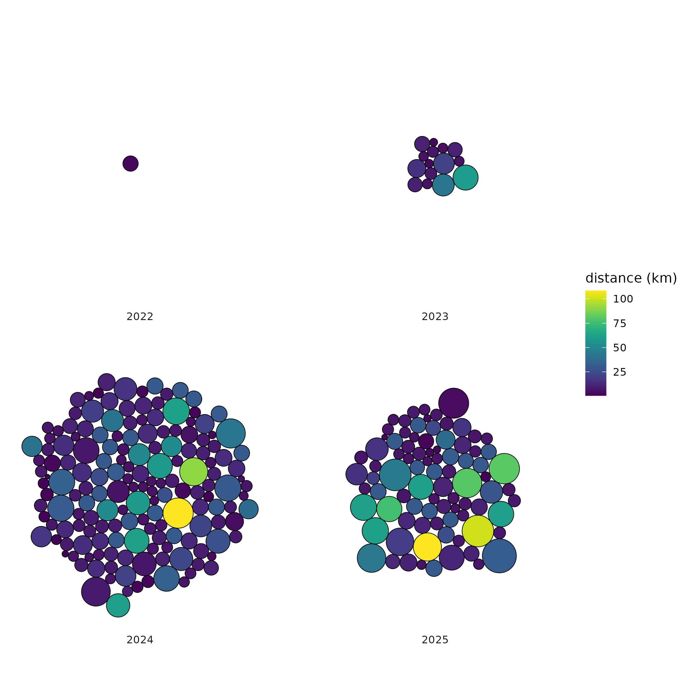

STRAVA Activity Visualisation
STRAVA offers an amazing suite of visual metrics. While many of these insights sit behind a fairly steep paywall, STRAVA's API gives users direct access to their own data. This project taps into that opportunity, using custom-built visualisations and activity assessments to generate perspectives that even the premium subscription doesn't offer.
This side project features a growing collection of custom visualisations based on my own activity data (with room for collarboration). I'll be
updating it regularly as my activity log grows. Stay tuned for a fully integrated activity dashboard that will bring all my activities
together!
View on GitHub
An inspired visualization based on Marcus Volz’s Strava visualizations, showing facets of every run, including two padel games (recorded as runs and appearing as curious blobs).
Project Details
This project allowed me to work with my personal Strava data (mainly GPX files) alongside 30×30 m digital elevation model (DEM) datasets sourced from OpenTopography.
After some research, I gained access to 1 m DEMs (GeoTIFF format) derived from the 2023 LiDAR dataset, thanks to the brilliant team at the GIS department of the City of Cape Town.
Stay tuned for udpates to the Gallery which will include some higher-grade 3D renderings once I secure access to a server with enough computing power to handle the rendering.
Gallery
Interactive 3D rendering of "Beau Around the Mountain". Starting at Beau Constantia, this is a favourite mountain bike ride of mine.
It's a 44km route that has a nice mix of climbs and views, with the biggest climb up to the Block House on Devils Peak.
This is an interactive 3D rendering of the Table Mountain Beast, a 30 km trail race I ran in May 2025. At the time it was the gnarliest trail run I had ever
done and the biggest climb with more than 2100 m of elevation. Nursery Ravine was absolutely brutal and had me questioning why I bought a ticket in the
first place. Although the finish at Foresters Arms paired with a few well earned beers made it all worth it.

Another visualization inspired by Marcus Volz: packed circles representing all of my runs and rides, each one sized and coloured by distance.
As you can see, my Strava usage only really kicked off in 2024.